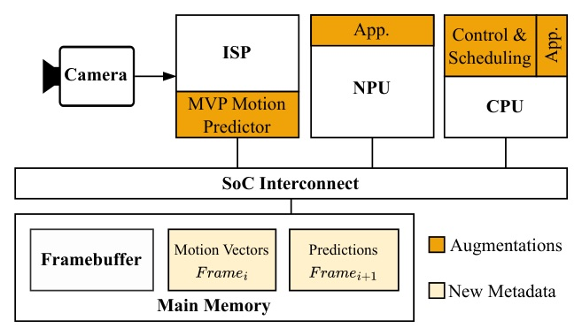
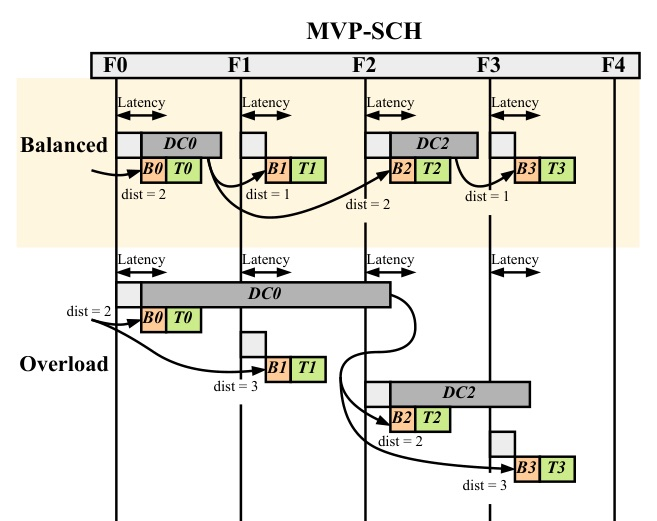
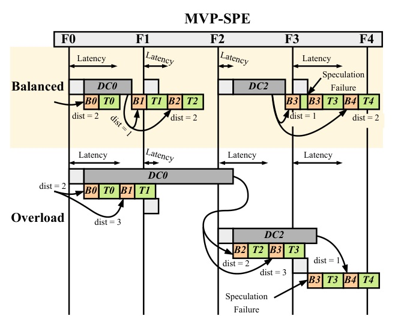
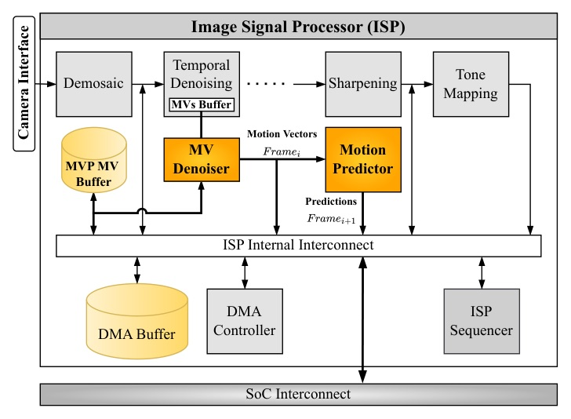
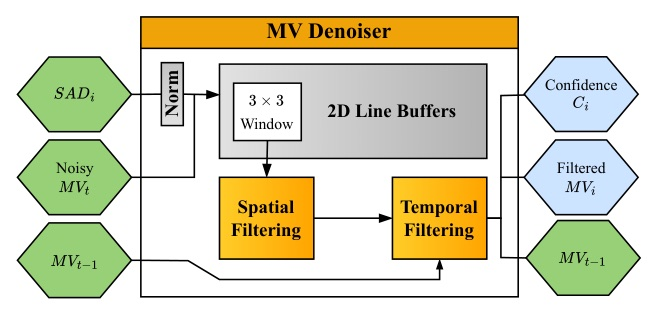
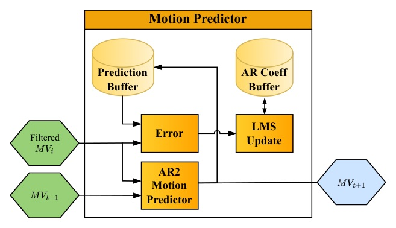
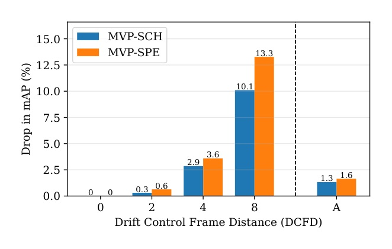
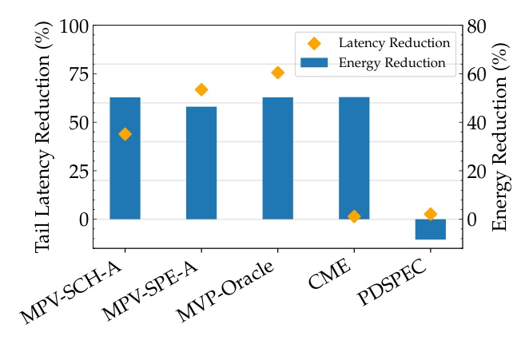
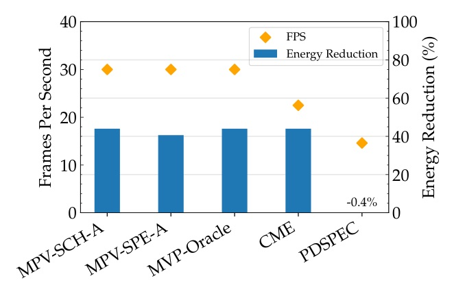

把 continuous vision 的 speculative execution 從 pixel domain 移到 ISP motion-vector domain。

MVP turns motion extrapolation into the default response path, then moves full inference to a background drift-correction path.
MOTION EXTRAPOLATION (CME)
PIXEL-DOMAIN SPECULATION (PVF / PDSPEC)


Nothing reaches a downstream task before the arriving frame’s motion vectors validate the prediction.
If it fails, MVP discards only the motion update, recalculates from measured MVs, and re-issues the task. No image-generation output, no NPU rollback.






| Workload (DCFD=4) | Accuracy effect | Energy reduction |
|---|---|---|
| KITTI tracking · YOLOv8m | HOTA 0.483 → 0.463 | 58% |
| MOT17 · YOLOv8m | HOTA 0.411 → 0.389 | 58% |
| KITTI · RT-DETR | mAP -2.6% | 63% |
| Metric | Reported value |
|---|---|
| 12 nm-class system area | 0.11 mm² |
| On-chip state | ~32 KB SRAM + 2 KB AR coefficients |
| RTL timing | 708 MHz |
| Dynamic / leakage power | 0.59 mW @ 50 MHz / 3.4 µW |
| Required block-rate headroom | >45× |
MVP wins because drift correction becomes asynchronous and a failed speculation becomes a local motion repair, not a full backend replay.
That is why it can improve tail latency even with a single NPU: the critical path is no longer waiting for a full inference to unblock the next useful output.
“Each frame is served immediately via extrapolation, while high-precision frame processing is performed asynchronously on selected Drift-Control (DC) frames to periodically correct prediction drift.”
每個 frame 先立即以 extrapolation 服務；高精度處理只在選定 DC frames 異步執行，以週期性修正 drift。§III-A p.4
“If the check fails, MVP discards only this lightweight motion update, never a neural-network inference.”
驗證失敗時，MVP 只丟棄這個輕量 motion update，絕不丟棄或重跑 neural-network inference。§III-C p.6
A practical systems paper about removing full inference from the latency-critical path — while keeping correction explicit and bounded.